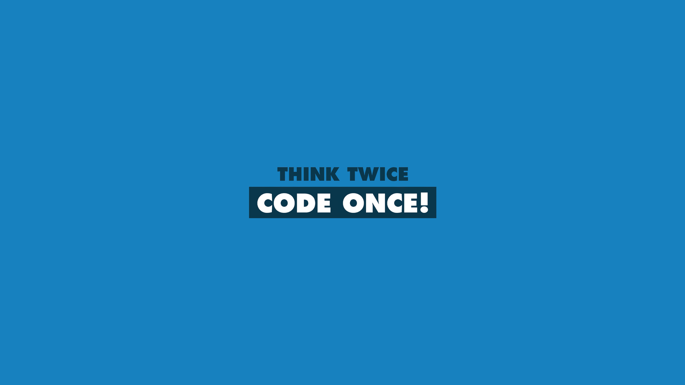

Primeiro Post
Olá, me chamo Matheus da Silva Nascimento e esta é uma página pessoal que estou
desenvolvendo para praticar HTML e CSS, durante o segundo módulo do Bootcamp Fullstack da DIO.
Se estiver curioso para saber mais sobre mim, então você pode acessar o Meu LinkedIn.
Caso deseje falar diretamente comigo, então pode
enviar um email para mim.
Garanto responder em até 24 horas ou no máximo 48 horas.
Eu acredito que pensar antes de começar algo pode aumentar a potêncialidade de algo que estamos prestes a fazer, isso justifica
a escolha da imagem deste primeiro post. Desde a primeira vez que tive contato com lógica de programção, no Curso Técnio em Informática em 2013,
tive um professor que sempre nos convidava a discutir e rabiscar no papel antes de partir para codificação. É claro que na ocasiçao estavamos
lidando com problemas mais objetivos, no entanto isto passou a ser parte de mim em muitas situação. Naturalmente, outras disciplinas cursadas
ao longo dos meus estudos também evidenciaram a importancia do planejamento antes da execução, neste caso, da codificação da solução.